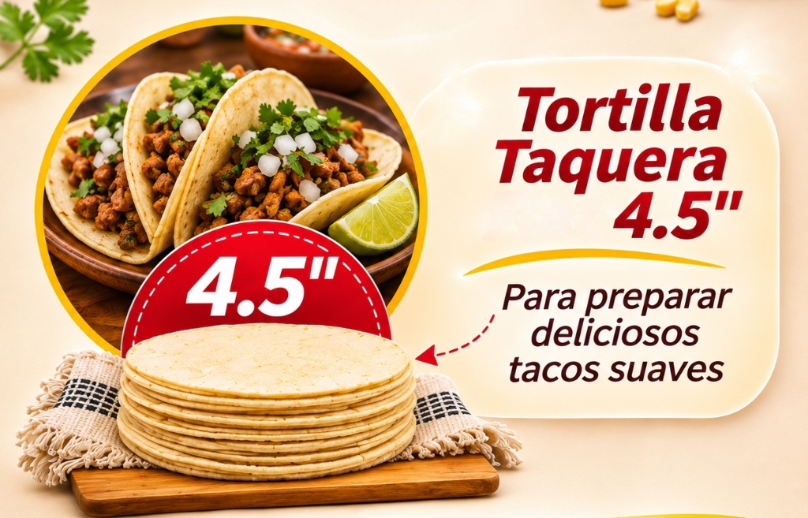

Nuestras Tortillas de Maíz
Nuestra fábrica elabora exclusivamente tortillas de maíz con recetas originales. Calientes, suaves y listas para servir gracias a nuestro sistema de termos.

Tortilla de Mesa 6"
Caliente, lista para servir a la mesa
La tortilla clásica e indispensable en la mesa diaria. Elaborada diariamente con puro maíz seleccionado y conservada en termos térmicos para garantizar máxima frescura y temperatura ideal al momento de servir.
- 100% Maíz seleccionado
- Conserva calor y suavidad
- Ideal para hogares y restaurantes

Tortilla Taquera Flat 4.5"
Para preparar deliciosos tacos suaves
Diseñada con el tamaño y grosor perfecto para taquerías, camiones de comida y amantes de los tacos. Su masa elástica resiste salsas, limón y carnes jugosas sin partirse ni romperse.
- Tamaño taquero perfecto de 4.5"
- No se quiebra con carnes ni salsas
- Textura flexible, tierna y suave

Tortilla Taco Flauta 9.5"
Ideal para tacos fritos
Formato extra grande y maleable para enrollar con facilidad tacos dorados y flautas crujientes. Al freírse logra un color dorado impecable y un crujido irresistible sin absorber grasa de más.
- Formato amplio de 9.5 pulgadas
- Fácil de enrollar sin agrietarse
- Dorado uniforme y crujiente al freír
Nuestras Tortillas Se Mantienen
Frescas y Calientes
Tamaño de nuestros Termos:
Garantizamos que cada paquete de tortillas conserve su temperatura, aroma y suavidad insuperable hasta el momento de compra en el supermercado.

Especialistas 100% en Maíz Tradicional
Nos dedicamos en exclusiva al arte de la tortilla de maíz recién hecha, garantizando recetas auténticas, máxima frescura y la entrega en termos térmicos para supermercados y negocios en Florida.
.png)